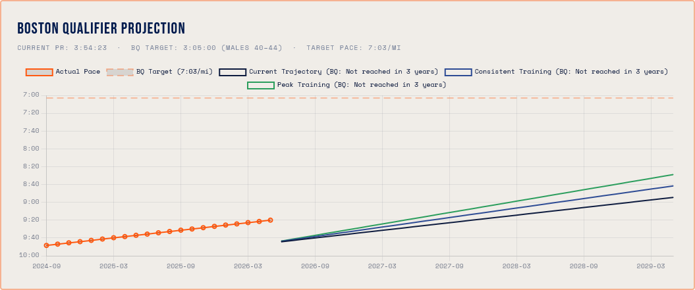
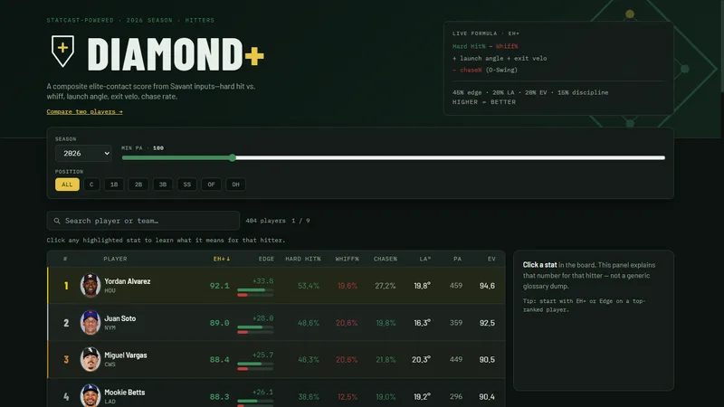
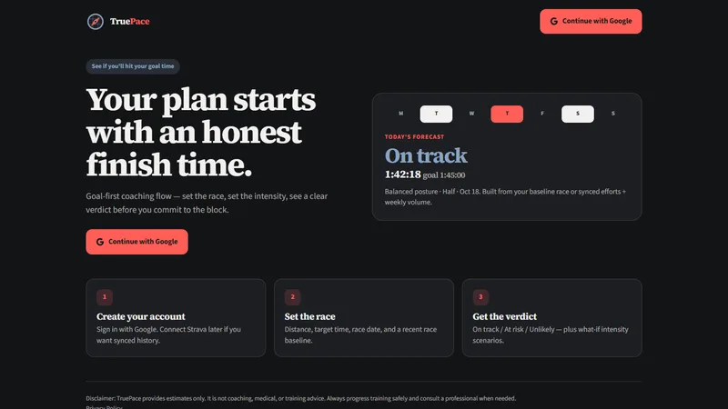

Case Studies & Build Architecture
A look under the hood at how I leverage custom data modeling and AI co-piloting to turn complex operational problems into deployed solutions—at lightspeed.

Predictive Analytics: The Boston Marathon Forecast Engine
The Challenge: Taking complex, multi-variable athletic training data (pace decay, weekly volume, historical benchmarks) and projecting accurate qualification probabilities.
The Architecture: Built using AI Agents as an engineering co-pilot to eliminate boilerplate friction, allowing 100% of the cognitive focus to remain on mathematical logic and UI execution.
The Result: A production-ready forecasting web application conceptualized, built, and deployed in hours instead of weeks.
Data Aggregation: Diamond+ Sports Analytics
The Challenge: Consolidating massive amounts of fragmented baseball performance data into a clean, actionable interface for rapid decision-making.
The Architecture: A custom EH+ composite score—weighting hard contact, whiffs, launch angle, exit velocity, and chase rate—computed across seven seasons of Statcast data and rendered in a fast, fully filterable leaderboard.
The Result: A deployed analytics platform with hitter and pitcher leaderboards, side-by-side player comparison, position and plate-appearance filters, and a full stat glossary—high-signal metrics with zero noise.


Goal Forecasting: TruePace Race Planner
The Challenge: Expanding the Boston forecast engine into a goal-first product—runners needed more than a projection; they needed to know whether a race goal was realistic and what training would get them there.
The Architecture: Goal time + recent race baseline feed a verdict model (On track / At risk / Unlikely), intensity what-ifs, and an auto-generated training plan built from the same performance inputs.
The Result: TruePace—a deployed web app that turns race ambition into an honest forecast and a followable plan before you commit to the block.
Middletown Market & Pipeline Demo
The Challenge: Real estate team leads already see CRM boards and BI charts—but rarely one discovery-ready product that combines local market context, agent pipeline health, multi-agent performance, and a plain-language AI summary they can trust in a 20-minute call.
The Architecture: A two-view static dashboard—Market & Pipeline plus Agent Performance—fed by JSON contracts: synthetic Middletown-area deals, an API-ready market snapshot with an interactive price trend, agent comparison metrics, and sample AI narrative panels written in business language. Vanilla HTML/CSS/JS keeps deploy friction near zero.
The Result: A shareable multi-board discovery demo that shows how custom dashboards + AI narrative sit on top of market, pipeline, and agent data—honestly labeled where data is sample vs. live-ready—built for consulting conversations, not as a full CRM replacement.

Stop letting technical friction delay your internal tools.
Whether you need to untangle messy data pipelines or build custom dashboards, I can help you architect the solution.
Book an AI Workflow Audit